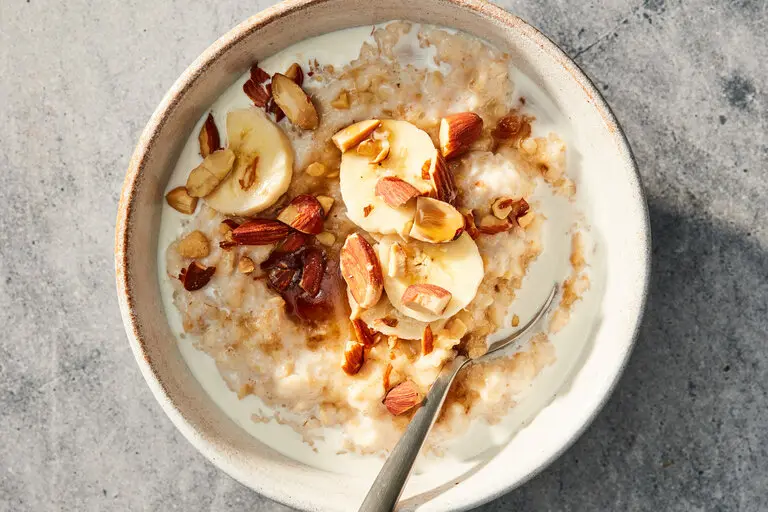

Oats-Meal

Description
A bowl of simple oats is warm, creamy comfort in its purest form—soft‑cooked rolled oats gently simmered in water or milk until they reach a silky, porridge‑like texture. Naturally nutty and mildly sweet, it’s a wholesome, fiber‑rich foundation that welcomes a drizzle of honey, a splash of fruit, or a sprinkle of nuts, yet is satisfying enough to enjoy plain. Light on the stomach, quick to make, and endlessly customizable, simple oatmeal is the go‑to breakfast for steady energy and easy nourishment.
Ingredients
- 1/2 cup rolled oats (or quick oats)
- 1 cup water or milk (or a mix of both)
- A pinch of salt (optional)
- 1–2 tsp honey, sugar, or jaggery (optional, for sweetness)
- Optional toppings: sliced banana, chopped nuts, berries, cinnamon, chia seed
Steps
- Combine Ingredients:
- 1/2 cup rolled oats
- 1 cup water or milk
- A pinch of salt (optional)
- Cook the Oats:
- Bring the mixture to a gentle boil over medium heat.
- Reduce the heat and simmer for 5–7 minutes, stirring occasionally, until the oats are soft and the texture is creamy.
- Sweeten (Optional):
- Stir in 1–2 tsp honey, sugar, or jaggery once the oats are cooked and off the heat.
- Serve and Top:
- Fresh fruit (banana, apple, berries)
- Nuts or seeds
- Cinnamon or nutmeg
- A drizzle of milk or more honey
Home